在GitCafe上部署Hexo博客
hexo是一款基于Node.js的静态博客框架。速度快，撰写方便，扩展性高。
注意事项
不要用中文输入法的符号
要开启文件扩展名的显示
参考资料
环境准备
安装git
首先打开git安装包
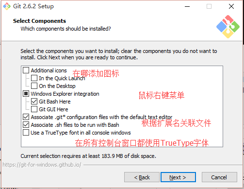
按照自己需求选择组件
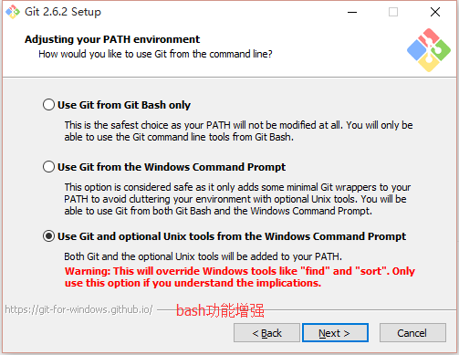
选择命令行的风格
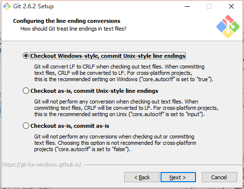
选择文本的结束符,参考 CRLF和LF
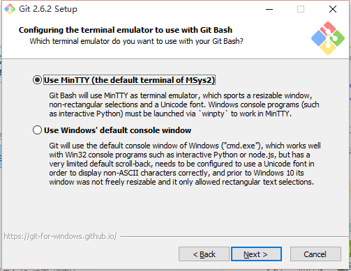
使用MinTTY作为终端
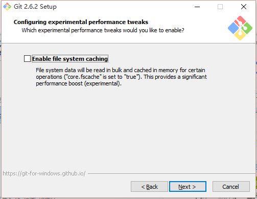
开启系统缓存，解决运行缓慢的问题
配置NodeJS环境变量
请使用4.x.x版本,5.x.x会出错
在CMD执行npm -v,如果如下显示，则说明环境变量配置成功，反之则需要重新配置环境变量

下载安装nodejs,找到nodejs安装目录
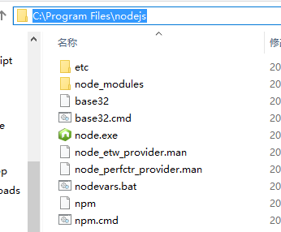
我这里是
C:Program Filesnodejs右键我的电脑，属性，高级，环境变量
找到系统变量的Path，点击编辑，先看看有没有nodejs的路径
如果没有，加上
;C:Program Filesnodejs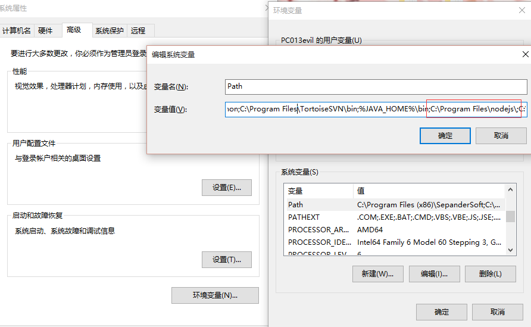
注册Gitcafe账号
在username输入一个你喜欢的英文名
注册完后可以看到用户控制面板，点击配置SSH Public Key
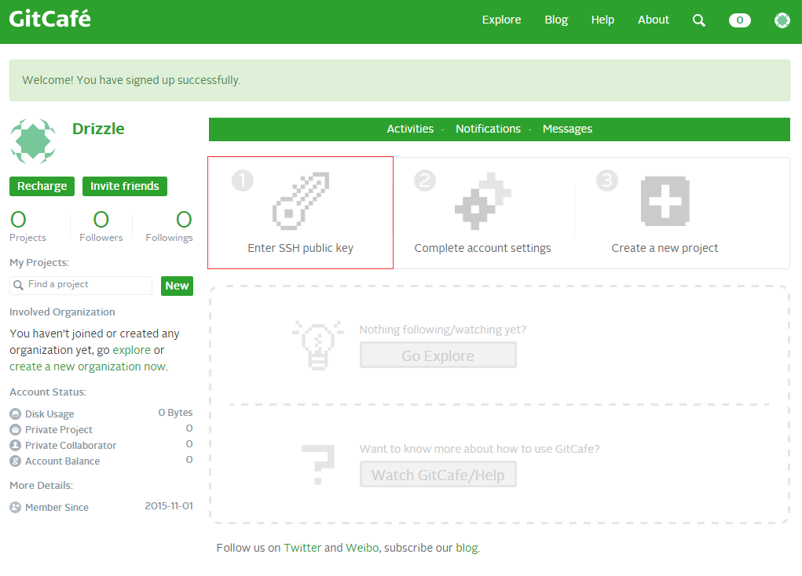
我们按照第一步，配置SSH公钥
先在桌面点击右键，选择Git Bash Here，执行下面这条命令，后面是你注册的邮箱：
1 | ssh-keygen -t rsa -C "root@gorgiaxx.com" -f ~/.ssh/gitcafe |
会提示输入密码，输入路两遍密码后，SSH密钥就生成成功了
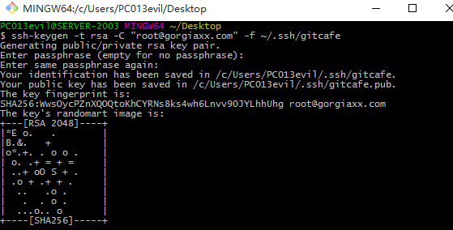
接下来到用户目录下的.ssh文件夹
C:UsersPC013evil.sshPC013evil是我的Windows的用户名。新建一个无扩展名的文本文件名字为config，里面输入：
1 | Host gitcafe.com www.gitcafe.com |
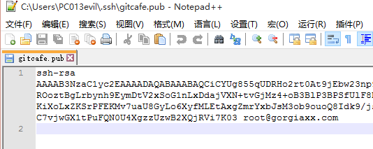
切换到Gitcafe的页面
https://gitcafe.com/account/public_keys/new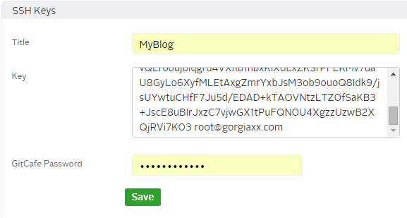
标题随便起一个，Key就填写gitcafe.pub里的内容，密码填写之前配置SSH公钥的密码
接着到终端里测试下是否成功，会提示输入密码：
1 | ssh -vT git@gitcafe.com |
然后到用户控制面板，点Create a new projecthttps://gitcafe.com/projects/new
Project name与用户名相同，点击创建
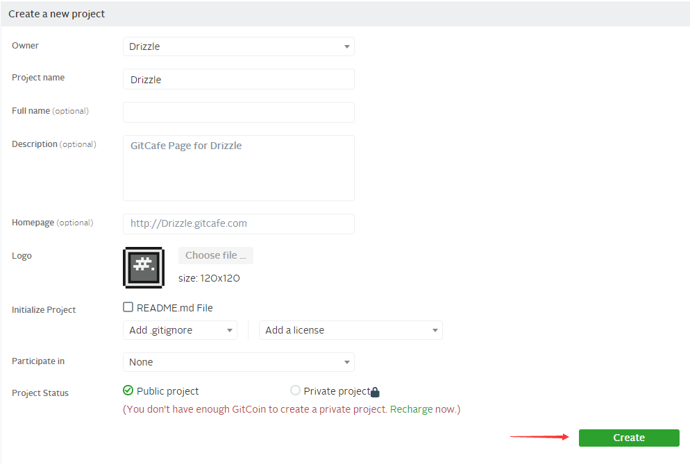
接下来选择右边的SSH，复制链接
git@gitcafe.com:Drizzle/Drizzle.git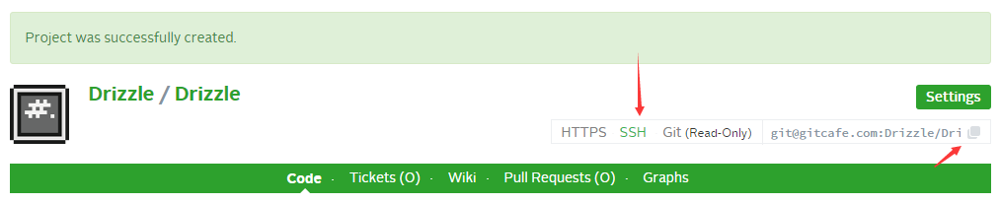
安装配置hexo
在管理员模式下的CMD执行：
1 | npm install -g hexo-cli |
-g是参数，表示全局安装hexo，这样你在任何路径都能执行hexo命令。cli代表command-line interface，命令行界面的意思。
Tips:如果安装过程缓慢，可以使用淘宝镜像
1 | npm install -g cnpm --registry=https://registry.npm.taobao.org |
然后每次使用都在npm前面加上c
1 | cnpm install -g hexo-cli |
新建一个文件夹，在里面右键Git Bash Here，弹出MINGW的终端
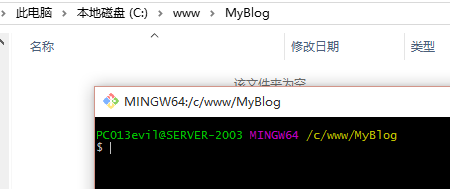
在此文件夹初始化hexo
1 | hexo init |
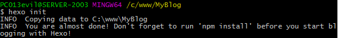
初始化hexo后，提示执行
1 | npm install |
可以看到已经生成了一些文件
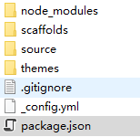
1 | . |
现在用编辑器打开_config.yml，找到最下面的deploy，不要忘记每个冒号后面都有空格。
这些内容的填写在官网都有说明，部署类型git，repo是远程仓库，填写之前复制的内容。
1 | deploy: |
要用git方式部署hexo的话，需要安装一个插件，这里提供两种安装方法。
第一种，直接安装，后面加–save安装的同时,将信息写入package.json
1 | npm install hexo-deployer-git --save |
第二种，在Package.json里加上这个插件依赖hexo-deployer-git
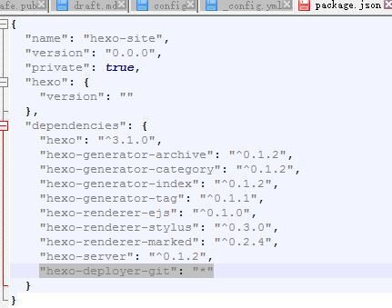
然后执行
1 | npm install |
这里使用第一种，安装完成
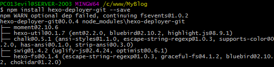
接下来预览一下博客
输入
1 | hexo server -i 127.0.0.1 -p 80 |
浏览器打开http://127.0.0.1，成功访问

每次要预览加参数很麻烦，可以到nodejs模块目录修改配置
1 | ./node_modules/hexo-server/index.js |
修改为：
1 | hexo.config.server = assign({ |
接下来预览就不用加参数了。hexo的命令可以简化,server可以用s表示
1 | hexo s |
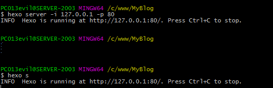
测试成功之后我们生成静态文件，生成后在
./public里，准备部署
1 | hexo generate |
也可以用
1 | hexo g |
生成之后，开始部署
1 | hexo deploy |
也可以用
1 | hexo d |
提示这个，是远端服务器ssh配置问题，我们不管，填yes，然后输入密码
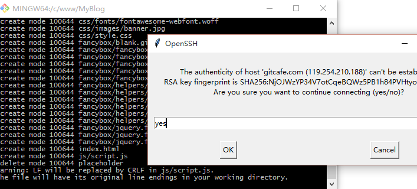
部署成功
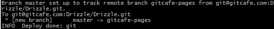
现在打开
http://drizzle.gitcafe.io/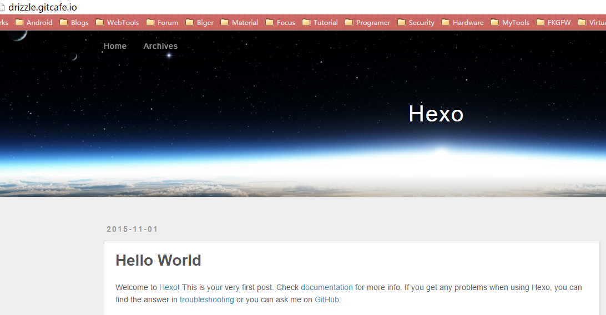
写博客
执行hexo n "title",新建一篇以title为标题的空文章。
1 | $ hexo n "title" |
可以看到生成了一个title.md，博客内容是用markdown语法写的。可以使用sublime的插件，也可以在线编辑，还有专门的编辑器
Git工具的简单使用
有的时候因为git工具版本问题，执行deploy后，不能成功部署，这时候我们就要手动部署
在./.deploy_git文件夹里面就是git的工程目录，关于git，可以到廖雪峰的博客学习git教程
在此文件夹右键Git Bash Here
我们先添加远程仓库
1 | git remote add origin git@gitcafe.com:Drizzle/Drizzle.git |
先将远端所有文件取回到本地，解决一些冲突问题
1 | git fetch --all |
回显，已经把分支给更新了
1 | $ git fetch --all |
切换到gitcafe-pages分支
1 | git branch gitcafe-pages |
不做任何合并处理，将HEAD指向刚从远程仓库同步下来的版本
1 | git reset --hard origin/gitcafe-pages |
回显
1 | $ git reset --hard origin/gitcafe-pages |
比如我要修改index.html的标题的内容
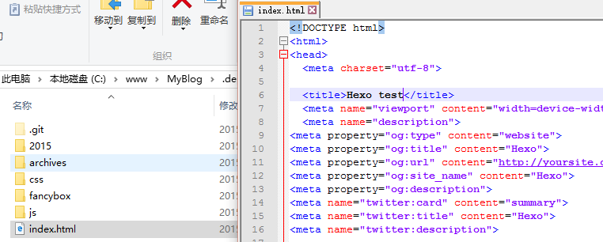
保存，执行
git add ./
1 | $ git add ./ |
提交到本地仓库，-m表示注释
1 | $ git commit -m "test" |
最后提交到远端仓库
1 | $ git push -u origin gitcafe-pages |
刷新页面
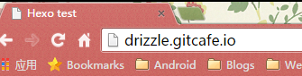
标题已经改变